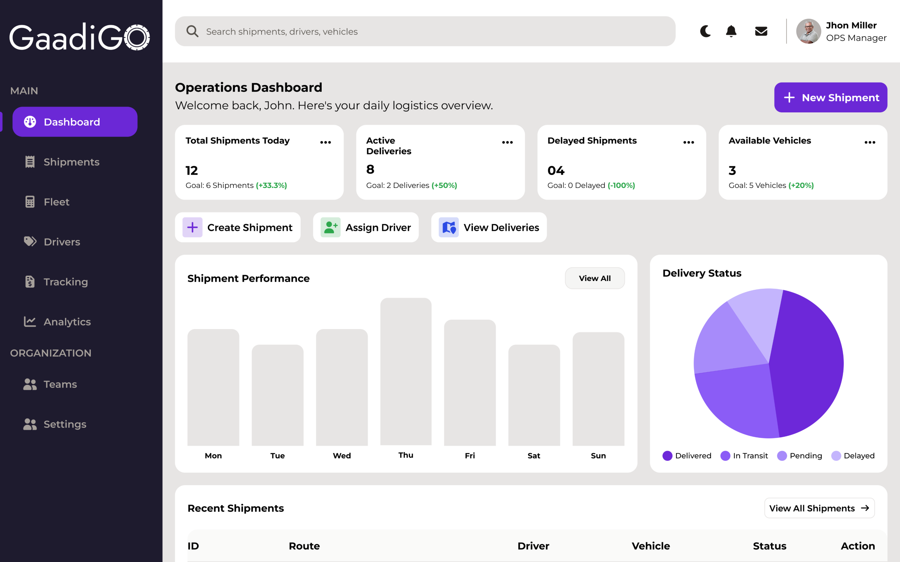
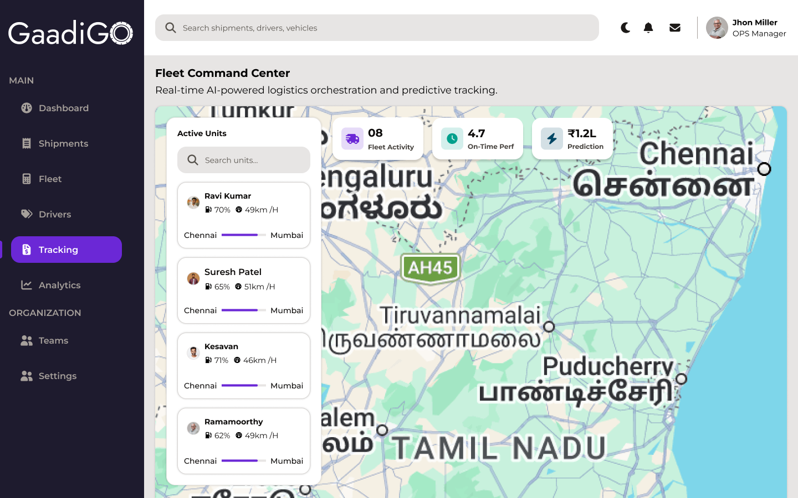
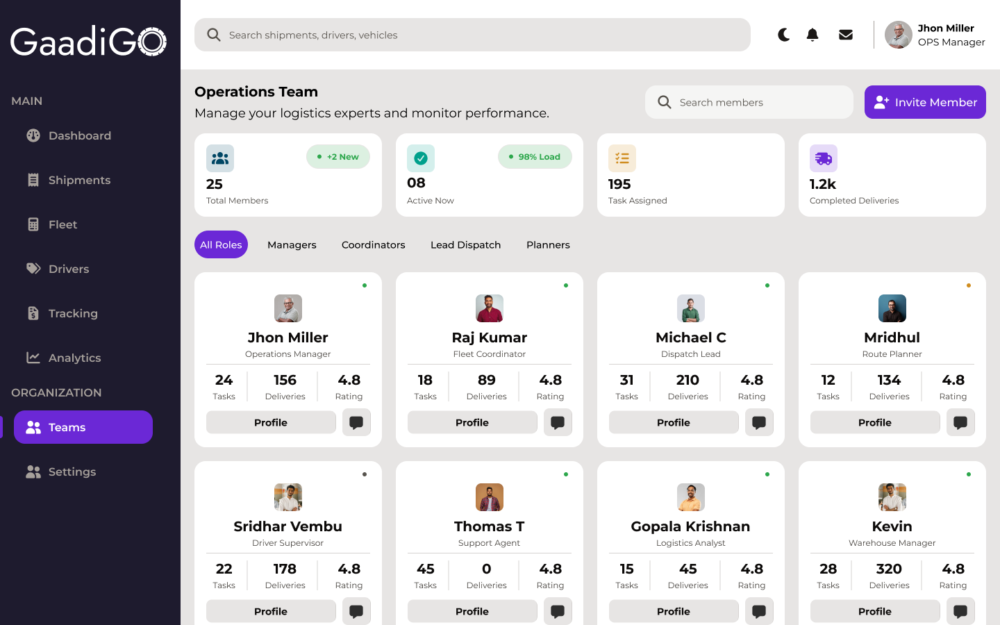
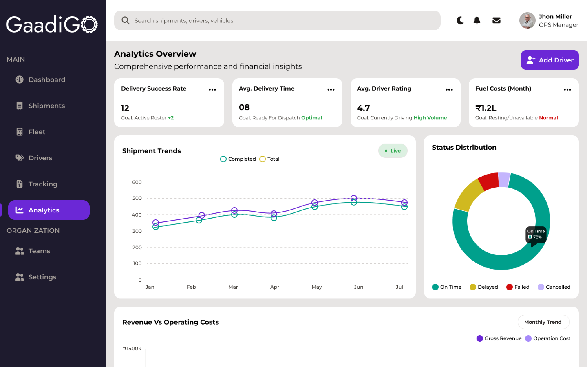

GaadiGo
B2B SaaS Logistics & Fleet Management Platform
A centralized, cloud-based dashboard that helps logistics companies manage shipments, drivers, vehicles, and real-time delivery tracking — all in one unified workspace.





Overview
Project Type
B2B SaaS / Logistics Platform
Role
UI/UX Designer
Domain
Logistics & Supply Chain
Tools
Figma, Maze, Adobe XD
My Contribution
Key Impact
The Problem
For Logistics Managers:
- Managing shipments, drivers, and fleet using multiple disconnected tools
- Spending up to 40% of the day switching between tracking apps, spreadsheets, and communication tools
- High cognitive load and operational confusion
Research Findings:
- 78% cited "lack of real-time visibility" as their biggest daily frustration
- 65% struggled with delayed shipments falling through the cracks
- Existing platforms (Onfleet, Samsara) were cluttered and overly complex
Research Insights
- Quantitative: Surveyed 50+ logistics operators — 78% lacked real-time visibility, 65% had issues with delayed shipments
- Qualitative: 1-on-1 interviews revealed a clear need for a "single source of truth" for operations
- Competitor Audit: Onfleet & Samsara are feature-rich but cluttered — opportunity for a cleaner, modular approach
- Key Theme: Proactive alerts > reactive problem-solving
User Persona
Operations Manager Mark
Age 38 · Logistics Industry
- Goal: Maximize fleet utilization & reduce delivery delays
- Pain: Data silos, slow reporting, reactive problem solving
- Need: One screen that shows everything critical
Empathy Mapping
Says
"Where is driver #4 currently located?"
Thinks
"I hope we don't miss the SLA on this high-priority batch."
Does
Constantly refreshes multiple tabs and manually updates Excel sheets.
Feels
Overwhelmed and anxious during peak delivery hours.
Information Architecture
Structured the platform into logical hubs to reduce navigation depth:
Design System
- Dark sidebar for focus & navigation
- Clean light-mode content area
- Strict color-coding for status: ● Delivered · ● Delayed · ● In Transit
- Glassmorphic elements for visual hierarchy
- Consistent KPI card grid at the top of every screen
Critical User Flow
Primary path: Creating a Shipment & Assigning a Driver (minimised clicks via Quick Actions):
Wireframes
- Lo-Fi: Content hierarchy focused — KPI grid is the primary eye-track target
- Mid-Fi: Precise spacing, grid systems, and data-table structures
- Hi-Fi: Full design system with motion & status color-coding
Usability Testing
Task-based testing sessions with 5 target users on the interactive prototype:
- Task 1 — Identify delayed shipments: 100% success rate in under 3 seconds — proving the effectiveness of the top-row KPI cards
- Task 2 — Locate a specific vehicle: Users found navigating to "Fleet" and scrolling took too long
- Iteration: Added a prominent Global Search Bar in the top navigation — users can now search for shipments, drivers, or vehicles from any page instantly
Learnings
- Data-heavy dashboards need strong visual hierarchy, not more data
- Quick Actions on the global level save more time than sub-menus
- Color-coded statuses reduce cognitive load dramatically
Next Steps
- Add AI-powered route optimization suggestions
- Build a driver mobile companion app
- Introduce predictive delay alerts via ML
Solution & Impact
What We Built:
- Unified control center replacing 4+ disconnected tools
- Real-time KPI grid (Total · Active · Delayed · Available)
- Global Search across all entities
- Live fleet map with driver status overlays
Measured Outcomes:
- 100% task success for delay identification (<3 sec)
- ~15 minutes saved per incident with proactive alerts
- Significant reduction in navigation time via Global Search
- Positive feedback on clean, focused UI vs. competitors